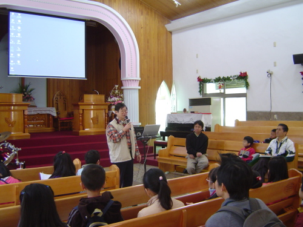
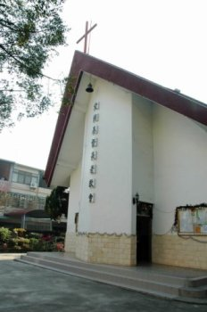

 
烏牛欄教會
1870年，巴宰族人潘開山．武干（Kaisan.Buhkan）打獵時，被槍托的後座力所傷，到府城求醫，府城即現在的台南。醫師是來自英國長老教會蘇格蘭醫師-馬雅各主治外科。
台灣的第一家西醫院即是他所創立。
潘開山．武干醫治半年後治癒，同時受福音感召，成為上帝的最佳見證人。他請求布道師隨他返鄉傳布福音，於是生於台南 鹽水的傳道師李豹就奉命與他同行，沿途宣教，烏牛欄庒的族人也因此都接受了耶穌 基督的洗禮。 後來，在1871年，埔里的第一間禮拜堂就在烏牛欄落成。
高年級學習單---烏牛欄教會的歷史